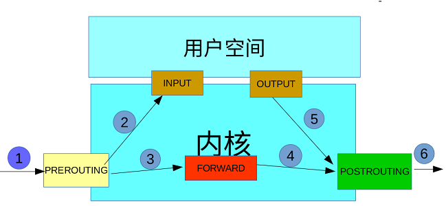
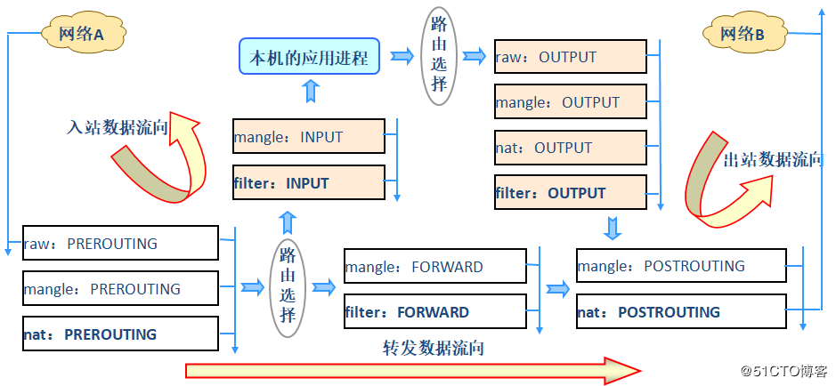
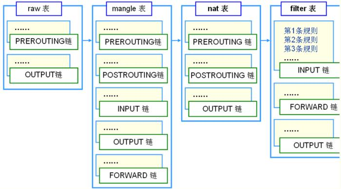

安全技术
入侵检测与管理系统（Intrusion Detection Systems）：特点是不阻断任何网络访问，量化、定位来自内外网络的威胁情况，主要以提供报告和事后监督为主，提供有针对性的指导措施和安全决策依据。一般采用旁路部署方式
入侵防御系统（Intrusion Prevention System）：以透明模式工作，分析数据包的内容如：溢出攻击、拒绝服务攻击、木马、蠕虫、系统漏洞等进行准确的分析判断，在判定为攻击行为后立即予以阻断，主动而有效的保护网络的安全，一般 采用在线部署方式
防火墙（ FireWall ）：隔离功能，工作在网络或主机边缘，对进出网络或主机的数据包基于一定的规则检查，并在匹配某规则时由规则定义的行为进行处理的一组功能的组件，基本上的实现都是默认情况下关闭所有的通过型访问，只开放允许访问的策略
防火墙的实现方式与分类
从逻辑上讲。防火墙可以大体分为主机防火墙和网络防火墙。
主机防火墙：针对于单个主机进行防护。
网络防火墙：往往处于网络入口或边缘，针对于网络入口进行防护，服务于防火墙背后的本地局域网。
网络防火墙和主机防火墙并不冲突，可以理解为，网络防火墙主外（集体），主机防火墙主内（个人）。
从物理上讲，防火墙可以分为硬件防火墙和软件防火墙。
硬件防火墙：在硬件级别实现部分防火墙功能，另一部分功能基于软件实现，性能高，成本高。
软件防火墙：应用软件处理逻辑运行于通用硬件平台之上的防火墙，性能低，成本低。
iptables和netfilter的关系
iptables/netfilter：软件实现的主机或网络防火墙；
netfilter是一个系统的内核模块，防火墙真正的安全框架（framework），通过netfilter内核控制硬件设备，5个勾子(hook)函数
iptables其实是一个命令行工具，位于用户空间，我们用这个工具操作真正的框架
数据包在本机的流向
报文由传送到本机网卡（PREROUTING链），由内核接收并放到接收缓存区（内存上）中。每当进来一个网络报文，系统就会向内核发送一个中断，由内核来接收、处理报文。若缓冲区满了就开始拒绝收包（也有可能放到消息队列）。
内核拆开数据包分析报文中的目标IP和源IP，由目标IP分析报文是传给谁，若是本机则传送至INPUT链，开始拆ip首部，tcp/udp首部（得到端口，端口号要在内核中注册过），最后把数据包交给相应进程处理。相关进程处理完后，把响应包发给源IP经由OUTPUT链离开本机。数据包由哪个网络接口流出取决于路由结果。
若目的IP不是本机，要么丢弃，要么转发（本机为网关）。FORWARD链
若要转发，继续封装帧首部，物理层首部。转发至下一跳或者目标主机。POSTROUTING链
防火墙可提高主机的安全性，但对系统性能会有影响。因为数据包每次经由链时，都会由链内的
规则匹配一遍，规则条目越多，性能越差。若要优化防火墙，提高性能，可尽量把多条规则合并成一条规则。

前3个hook是防火功能
input+output+forward
访问本机内部的应用
后2个hook:是实现地址转换，报文修改和连接追踪的关闭
prerouting:在进入本机网卡接收队列前的瞬间：路由前
postrouting:由本机发出或者forward转发的离开本机网卡接收队列的瞬间：路由后
而prerouting是不能做过滤的
三种报文流向：
流入的报文：
prerouting–>路由–>input–>进入用户空间进程
流出的报文：这里说的流出报文是指由本机主动发出的请求报文
用户空间进程 –>output–>postrouting
转发的报文：
prerouting–>forward–>postrouting
而数据报文是有来有往的，有请求报文就应该有响应报文，所以整个通信的过程报文流向应该是
先流入报文：请求报文
prerouting–>路由–>input–>进入用户空间进程
再出去：响应报文
用户空间进程 –>output–>postrouting
转发报文：请求
prerouting–>forward–>postrouting
转发报文的：响应
也是prerouting–>forward–>postrouting
注意，因为客户端和服务端是相对的，进来的都是prerouting出去的都是postrouting
而请求和响应的数据报文，因方向不同，数据报文内封装的源IP+端口和目标IP+端口是相反的
客户端和服务端则是相对的，转发报文也是类似的，也是有来有往的
而为了服务器资源来说，如果要阻止报文，控制的是请求报文而非响应报文

功能：
filtter : 过滤，防火墙；
nat : network address translation, 网络地址转换；只拆解报文修改地址(ip层地址，传输层地址)的那一部分
snat :源地址转换
dnat :目标地址转换
pnat :端口转换
mangle ： 拆解报文，做出修改，封装报文
raw ： 关闭nat表上启用的连接追踪机制
链(chain)：
netfilter的勾子函数
内置链
PREROUTING ：刚刚进入网卡，马上要由内核进行处理时（路由前）
INPUT：到本机内部来的
FORWARD： 经由本机转发的
OUTPUT：经由本机发出的
POSTROUNTING：报文即将离开本机时（路由后）
自定义链
名字可以自取，对内置链的扩展，可实现更灵活的规则组织管理机制。只有把自定义链链接到内置链上才能生效
表(table)与链关系
与链关系有多种不同的工作方式，每种工作方式称为一个table，在每一个table上可以有多个链
filter：INPUT，FORWARD，OUTPUT
nat：PREROUTING，INPUT，OUTPUT，POSTROUTING
mangle：PREROUTING，INPUT，FORWARD，OUTPUT，POSTROUTING
raw：PREROUTING， OUTPUT

优先级次序(由高而低)：
raw --> mangle --> nat --> filter
就算filter和nat上都在同一个input链上，因为不属于一个table的，规则是各自生效的
那么input上同时有filter和nat表的规则时，则是有优先级的
为了实验，要先关闭firewalld设置开机不启动
systemctl stop firewalld
systemctl disabled firewalld
systemctl is-enabled firewalld
规则顺序很重要
因为有些规则具有一票否则权比如drop，一旦报文匹配到drop规则，后面的规则都不看
因为有些规则具有一票否则权比如accept，一旦报文匹配到drop规则，即使后面有drop也无效
从这两条来说
把检查条件苛刻的规则放前面
规则调用的模块化管理：自定义链，由主链取调用才会生效，删除或更改时方便管理
rule规则
规则rule：根据规则的匹配条件尝试匹配报文，对匹配成功的报文根据规则定义的处理动 作作出处理
报文的匹配的匹配是从链的头部 向尾部匹配，一旦匹配成功，不再匹配后面的规则
匹配条件：
基本匹配条件：简单检查IP、TCP、UDP等报文的某属性进行匹配的机制；
扩展匹配条件：需要借助于扩展模块进行的匹配条件指定即为扩展匹配；
处理动作：
ACCEPT：允许数据包通过。
DROP：直接丢弃数据包，不给任何回应信息，过了超时时间才会有反应。
REJECT：拒绝数据包通过，必要时会给数据发送端一个响应的信息，客户端刚请求就会收到拒绝的信息。
SNAT：源地址转换，解决内网用户用同一个公网地址上网的问题。
MASQUERADE：是SNAT的一种特殊形式，适用于动态的、临时会变的ip上。
DNAT：目标地址转换。
REDIRECT：在本机做端口映射。
LOG：在/var/log/messages文件中记录日志信息，然后将数据包传递给下一条规则，也就是说除了记录以外不对数据包做任何其他操作，仍然让下一条规则去匹配
扩展动作：需要借助扩展模块进行的动作；
添加防火墙规则时的注意点：
(1) 报文的流经路径，判断添加规则至哪个链上；
(2) 确定要实现的功能，判断添加规则至哪个表上；
(3) 要指定的匹配条件，以用于匹配目标报文；
规则优化：
(1) 可安全放行所有入站及出站，且状态为ESTABLISHED的连接；
(2) 服务于同一类功能的规则，匹配条件严格的放前面，宽松放后面；
(3) 服务于不同类功能的规则，匹配报文可能性较大扩前面，较小放后面；
(4) 设置默认策略；
(a) 最后一条规则设定；
(b) 默认策略设定；
iptables的黑白名单机制
链的默认策略（默认动作），链的默认策略通常设置为ACCEPT或者DROP
黑名单：
当链的默认策略为ACCEPT时，链中的规则对应的动作应该为DROP或者REJECT，表示只有匹配到规则的报文才会被拒绝，没有被规则匹配到的报文都会被默认接受
白名单：
当链的默认策略为DROP时，链中的规则对应的动作应该为ACCEPT，表示只有匹配到规则的报文才会被放行，没有被规则匹配到的报文都会被默认拒
使用"白名单"的机制，最好将链的默认策略保持为"ACCEPT"，然后将"拒绝所有请求"这条规则放在链的尾部，将"放行规则"放在前面，这样做，既能实现"白名单"机制，又能保证在规则被清空时，管理员还有机会连接到主机
生产环境下设置防火墙
防火墙规则一般是要设置白名单的，而默认策略是需要设置为DROP或者REJECT，这时，如果
不先把SSH或者VNC先设置白名单，我们就无法管理了！那就是给自己找麻烦了
注意：如果不想意外的事情发生，记得上22端口的ACCEPT规则在拒绝之前，防止远程连接端口